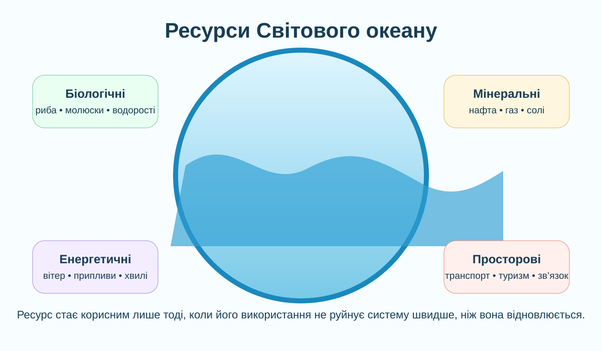
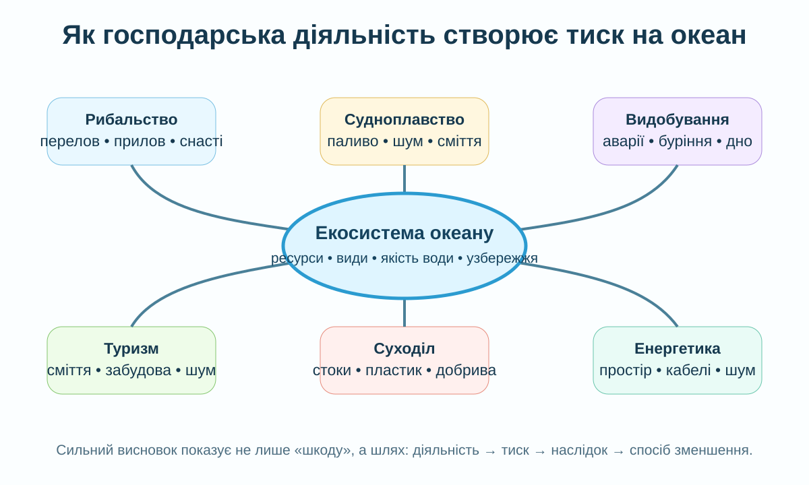

🌊 Географія • 6 клас • урок 47 • робота з інформацією
Ресурси Світового океану
Океан дає їжу, енергію, сировину, транспортні шляхи й робочі місця. Але одна й та сама діяльність може одночасно створювати користь і тиск на екосистеми. Наше завдання — навчитися бачити обидві сторони й доводити висновок даними.
§40ГР2 + ГР3«Океан у небезпеці»експрес-тест 3CER
Океан — не лише природне середовище, а й простір науки, рибальства, транспорту та управління ресурсами. Фото NOAA Fisheries.
СТАРТ • НЕ З ВИЗНАЧЕННЯ
Коли природний компонент стає ресурсом?

Оберіть найточніший висновок.
Проблемне питання: чи може відновлюваний ресурс стати виснаженим? Запишіть приклад, але поверніться до відповіді після блоку про рибальство.
РОБОТА З ІНФОРМАЦІЄЮ 1
Океан як господарський простір
🐟 Біологічніриба, молюски, ракоподібні, водорості; рибальство й аквакультура⛏️ Мінеральнінафта, газ, солі та інша сировина морського дна й води⚡ Енергетичніофшорний вітер, припливи, хвилі; потенціал різний у різних районах🚢 Просторовісудноплавство, порти, підводні кабелі, рекреація й туризм
Офшорна вітроенергетика. NOAA Fisheries наголошує, що розміщення таких об’єктів потребує врахування рибальства, екосистем і морського простору.Морський транспорт переносить величезні обсяги товарів. Навігаційні дані NOAA допомагають суднам безпечно працювати в портах і протоках.
Мінікейс: одна акваторія — багато користувачів
У прибережному районі одночасно працюють рибалки, порт, туристичний бізнес і планується офшорна ВЕС. Який підхід кращий?
Ключова ідея: господарська діяльність у Світовому океані — це система компромісів. «Корисне» не означає «без наслідків», а «ризиковане» не означає «заборонити все».
РОБОТА З ІНФОРМАЦІЄЮ • КТП
«Океан у небезпеці»: побудуйте причинні ланцюги
NASA Earth Observatory: модельна карта просторового розподілу мікропластиків за супутниковими даними CYGNSS. «Сміттєва пляма» — не суцільний острів сміття.

Не пишіть просто «людина забруднює океан». Сильний географічний висновок має структуру: діяльність → конкретний тиск → зміна середовища/організмів → наслідок для людей або екосистем → спосіб зменшення ризику.
75–199 млн т
Так UNEP оцінює обсяг пластмас, що вже перебувають в океані. Без суттєвих змін потоки пластикових відходів до водних екосистем можуть різко зрости.
За глобальною оцінкою FAO 2024, така частка оцінених морських рибних запасів перебувала в біологічно сталих межах; отже, «риба відновлюється» не означає «можна виловлювати без обмежень».
NOAA виділяє втрату рибальських снастей, сміття із суден і втрату вантажів серед океанічних джерел морського сміття. Покинуті снасті можуть продовжувати «примарне рибальство».
Заповніть хоча б три рядки. Не копіюйте загальні слова — називайте механізм.
Діяльність
Користь
Тиск / ризик
Доказ або показник
Рішення
Рибальство
Судноплавство
Енергетика / видобування
ІНТЕРАКТИВНА МОДЕЛЬ
Коли використання ресурсу стає нестійким?
Це навчальна модель, а не реальний розрахунок рибних квот. Вона показує логіку балансу «тиск ↔ відновлення ↔ управління».
—
Доказове завдання: доберіть два різні набори параметрів, що дають подібний ризик. Поясніть, чому однаковий результат може виникнути через різні причини.
КОРОТКЕ ВІДЕО
NOAA Trash Talk: звідки береться морське сміття?
Під час перегляду
Запишіть один приклад джерела сміття, один приклад перенесення океанічними процесами та один наслідок.